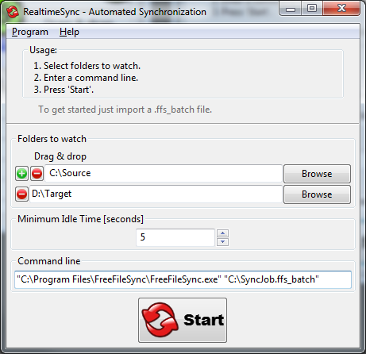
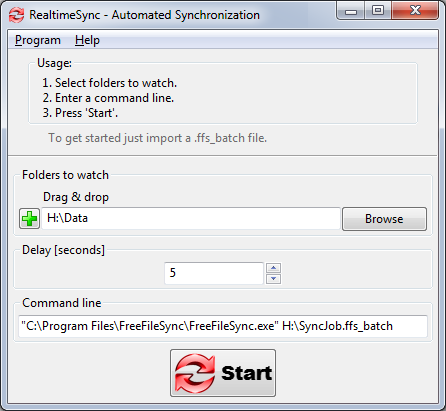

RealtimeSync is a small tool which executes a command line each time it detects changes in one of the monitored directories or a directory becomes available (e. g. insert of a USB-stick). Usually this command line will simply trigger a FreeFileSync batch job.
Example: Real time synchronization - in combination with FreeFileSync
Start RealtimeSync.exe located in FreeFileSync's installation directory. Then specify all folders that shall be monitored. Instead of doing this manually you can import a *.ffs_batch file via Menu -> Program -> Open. This not only extracts all directories relevant for synchronization but also sets up the command line to execute the *.ffs_batch file each time changes are detected. Now press "Start" to begin monitoring.

Note The
command should not
block
progress. Make sure the FreeFileSync batch job does not show any
popup dialogs. See notes in Batch
Scripting. The
settings dialog can be skipped by passing a RealtimeSync
configuration file (*.ffs_real)
or a FreeFileSync batch file (*.ffs_batch)
as first command-line argument to RealtimeSync.exe. This can be
integrated into the operating system's auto start
facility: Using
RealtimeSync is not restricted to starting FreeFileSync. It can
also be used in other scenarios, like sending an email whenever a
certain directory is modified.
"C:\Program
Files\FreeFileSync\RealtimeSync.exe"
"C:\MyConfig.ffs_real"
"C:\Program
Files\FreeFileSync\RealtimeSync.exe" "C:\SyncJob.ffs_batch"
Example: Automatic synchronization when USB stick is inserted
Save a ffs_batch configuration into the USB stick's root directory and have it called when the stick is mounted. Then configure RealtimeSync as shown in the following:

Whenever directory "H:\Data" becomes available, the command line executes and starts the batch job on the stick. Additionally it also starts the batch job each time files are modified in "H:\Data".
Note
The
name
of the last changed file is written to an environment variable
named "changed_file".
Example: Show names of changed files or directories. (Windows)
Show
which file or directory has triggered a change. Enter command
line:
cmd /c echo
"%changed_file%" & pause
Write
a list of all changes to a logfile:
cmd
/c echo "%changed_file%" >> c:\log.txt
Note wscript
"C:\Program files\FreeFileSync\HideConsole.vbs"
C:\MyBatchFile.cmd
During
execution of a Windows Batch file (*.bat/*.cmd) a black console
window is shown. You can hide it using the Visual Basic script
"HideConsole.vbs" located in FreeFileSync's installation
directory:
Limitations:
If multiple changes happen at the same time, only the name of the first file is written to variable "changed_file".
While RealtimeSync is executing the command line, monitoring is inactive and changes occurring during this time are lost.